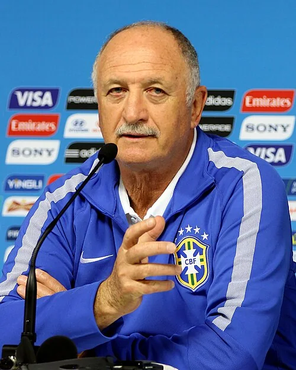

Photo source ↗Danilo Borges · CC BY 3.0
The profile
Luiz Felipe Scolari
Luiz Felipe Scolari is a Brazilian coach whose teams have been known for strong organisation and clear attacking roles. He took charge of Brazil before the 2002 World Cup.
Scolari coached clubs in Brazil before taking charge of national teams. He emphasised a strong team structure that could support technically gifted forwards.
Scolari led Brazil to its fifth title in 2002. The team won all seven matches and beat Germany 2–0 in the final, with Ronaldo scoring both goals.
2002Korea + Japan
Champion
Group C Brazil2 : 1Turkey
- RONALDO50′
- RIVALDO87′ · pen.
- Hasan SAS45+2′
Brazilhome
Starting lineup
- MARCOS
- CAFU
- LUCIO
- ROQUE JUNIOR
- EDMILSON
- ROBERTO CARLOS
- GILBERTO SILVA
- RIVALDO
- RONALDINHO
- JUNINHO PAULISTA
- RONALDO
Substitutions
- 67′DENILSON on · RONALDINHO off
- 72′VAMPETA on · JUNINHO PAULISTA off
- 73′LUIZAO on · RONALDO off
Turkeyaway
Starting lineup
- Rustu RECBER
- Bulent KORKMAZ
- Fatih AKYEL
- Alpay OZALAN
- Umit OZAT
- Hakan UNSAL
- Tugay KERIMOGLU
- Yildiray BASTURK
- Emre BELOZOGLU
- Hakan SUKUR
- Hasan SAS
Substitutions
- 66′Umit DAVALA on · Yildiray BASTURK off
- 66′Ilhan MANSIZ on · Bulent KORKMAZ off
- 88′Arif ERDEM on · Tugay KERIMOGLU off
Group C Brazil4 : 0China
- ROBERTO CARLOS15′
- RIVALDO32′
- RONALDINHO45′ · pen.
- RONALDO55′
Brazilhome
Starting lineup
- MARCOS
- CAFU
- LUCIO
- ROQUE JUNIOR
- ROBERTO CARLOS
- ANDERSON POLGA
- GILBERTO SILVA
- RIVALDO
- RONALDINHO
- JUNINHO PAULISTA
- RONALDO
Substitutions
- 45′DENILSON on · RONALDINHO off
- 70′RICARDINHO on · JUNINHO PAULISTA off
- 72′EDILSON on · RONALDO off
Chinaaway
Starting lineup
- JIANG Jin
- WU Chengying
- LI Weifeng
- DU Wei
- XU Yunlong
- LI Tie
- MA Mingyu
- ZHAO Junzhe
- LI Xiaopeng
- QI Hong
- HAO Haidong
Substitutions
- 62′YANG Pu on · MA Mingyu off
- 66′SHAO Jiayi on · QI Hong off
- 75′QU Bo on · HAO Haidong off
Group C Costa Rica2 : 5Brazil
- Paulo WANCHOPE39′
- Ronald GOMEZ56′
- RONALDO10′
- RONALDO13′
- EDMILSON38′
- RIVALDO62′
- JUNIOR64′
Costa Ricahome
Starting lineup
- Erick LONNIS
- Luis MARIN
- Mauricio WRIGHT
- Gilberto MARTINEZ
- Harold WALLACE
- Carlos CASTRO
- Wilmer LOPEZ
- Mauricio SOLIS
- Walter CENTENO
- Paulo WANCHOPE
- Ronald GOMEZ
Substitutions
- 45′Steven BRYCE on · Harold WALLACE off
- 65′Rolando FONSECA on · Mauricio SOLIS off
- 74′Winston PARKS on · Gilberto MARTINEZ off
Brazilaway
Starting lineup
- MARCOS
- CAFU
- LUCIO
- EDMILSON
- ANDERSON POLGA
- JUNIOR
- GILBERTO SILVA
- RIVALDO
- JUNINHO PAULISTA
- RONALDO
- EDILSON
Substitutions
- 57′KLEBERSON on · EDILSON off
- 61′RICARDINHO on · JUNINHO PAULISTA off
- 72′KAKA on · RIVALDO off
Round of 16 Brazil2 : 0Belgium
- RIVALDO67′
- RONALDO87′
Brazilhome
Starting lineup
- MARCOS
- CAFU
- LUCIO
- ROQUE JUNIOR
- EDMILSON
- ROBERTO CARLOS
- GILBERTO SILVA
- RIVALDO
- RONALDINHO
- JUNINHO PAULISTA
- RONALDO
Substitutions
- 57′DENILSON on · JUNINHO PAULISTA off
- 81′KLEBERSON on · RONALDINHO off
- 90′RICARDINHO on · RIVALDO off
Belgiumaway
Starting lineup
- Geert DE VLIEGER
- Nico VAN KERCKHOVEN
- Jacky PEETERS
- Daniel VAN BUYTEN
- Timmy SIMONS
- Bart GOOR
- Johan WALEM
- Gert VERHEYEN
- Yves VANDERHAEGHE
- Marc WILMOTS
- Mbo MPENZA
Substitutions
- 72′Wesley SONCK on · Jacky PEETERS off
Quarterfinal England1 : 2Brazil
- Michael OWEN23′
- RIVALDO45+2′
- RONALDINHO50′
Englandhome
Starting lineup
- David SEAMAN
- Danny MILLS
- Ashley COLE
- Rio FERDINAND
- Sol CAMPBELL
- Trevor SINCLAIR
- David BECKHAM
- Paul SCHOLES
- Nicky BUTT
- Michael OWEN
- Emile HESKEY
Substitutions
- 56′Kieron DYER on · Trevor SINCLAIR off
- 79′Darius VASSELL on · Michael OWEN off
- 80′Teddy SHERINGHAM on · Ashley COLE off
Brazilaway
Starting lineup
- MARCOS
- CAFU
- LUCIO
- ROQUE JUNIOR
- EDMILSON
- ROBERTO CARLOS
- GILBERTO SILVA
- RIVALDO
- RONALDINHO
- KLEBERSON
- RONALDO
Substitutions
- 70′EDILSON on · RONALDO off
Semifinal Brazil1 : 0Turkey
- RONALDO49′
Brazilhome
Starting lineup
- MARCOS
- CAFU
- LUCIO
- ROQUE JUNIOR
- EDMILSON
- ROBERTO CARLOS
- GILBERTO SILVA
- RIVALDO
- KLEBERSON
- RONALDO
- EDILSON
Substitutions
- 68′LUIZAO on · RONALDO off
- 75′DENILSON on · EDILSON off
- 85′BELLETTI on · KLEBERSON off
Turkeyaway
Starting lineup
- Rustu RECBER
- Bulent KORKMAZ
- Fatih AKYEL
- Alpay OZALAN
- Tugay KERIMOGLU
- Yildiray BASTURK
- Ergun PENBE
- Emre BELOZOGLU
- Umit DAVALA
- Hakan SUKUR
- Hasan SAS
Substitutions
- 62′Ilhan MANSIZ on · Emre BELOZOGLU off
- 74′Muzzy IZZET on · Umit DAVALA off
- 88′Arif ERDEM on · Yildiray BASTURK off
Final Brazil2 : 0Germany
- RONALDO67′
- RONALDO79′
Brazilhome
Starting lineup
- MARCOS
- CAFU
- LUCIO
- ROQUE JUNIOR
- EDMILSON
- ROBERTO CARLOS
- GILBERTO SILVA
- RIVALDO
- RONALDINHO
- KLEBERSON
- RONALDO
Substitutions
- 85′JUNINHO PAULISTA on · RONALDINHO off
- 90′DENILSON on · RONALDO off
Germanyaway
Starting lineup
- Oliver KAHN
- Thomas LINKE
- Christoph METZELDER
- Carsten RAMELOW
- Didi HAMANN
- Jens JEREMIES
- Bernd SCHNEIDER
- Torsten FRINGS
- Oliver NEUVILLE
- Miroslav KLOSE
- Marco BODE
Substitutions
- 74′Oliver BIERHOFF on · Miroslav KLOSE off
- 77′Gerald ASAMOAH on · Jens JEREMIES off
- 84′Christian ZIEGE on · Marco BODE off